Riverbend · Stone Age
Integrated first-era candidate for Dima's review. Current SpriteKit and original geography are preserved. Candidate artwork is replaceable. No external reference image has been integrated.
Implementation and verification report · Production standards · ChatGPT media examples · Exact prompts and provenance
First-era playability
Start, understand and complete — quality report. Ordinary guided routes finish in104–121simulated minutes, with no grants or balance changes. Approved starter-material protection and historical recovery limit. Graphics, roads and NPCs are secondary.
Compact menus · evening feedback
Refinement and verification report · ChatGPT visual guide · Alignment SVG. Five UI tests pass on phone and both tablet profiles. Signed update built; installation awaits physical iPhone reconnection.
Three original visual directions
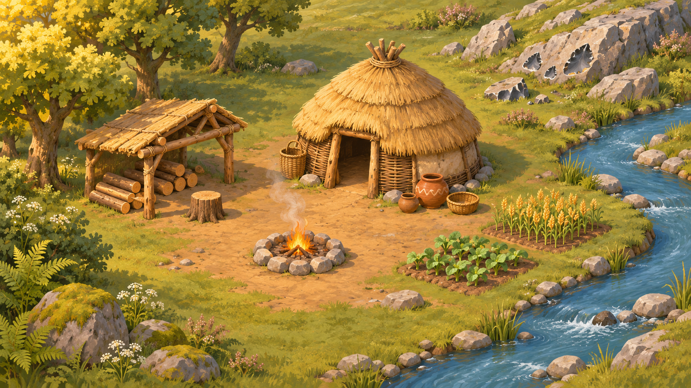
A · Warm living miniature — candidate B · Illustrated history
B · Illustrated history C · Architectural maquette
C · Architectural maquetteAll twenty building visuals
512px runtime sprites and144px thumbnails derive from retained transparent original rasters. These are not claimed to be editable3Dmodels. Native vector source supplies20research icons,12resource icons,5pillar icons and world terrain details.
 Campfire
Hut
Campfire
Hut
 Gathering shelter
Gathering shelter
 Hunting lodge
Hunting lodge
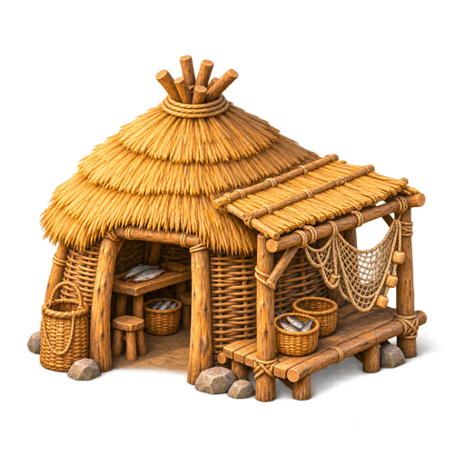
Fishing shelter
 Woodcutter
Woodcutter
 Stone gatherer
Stone gatherer
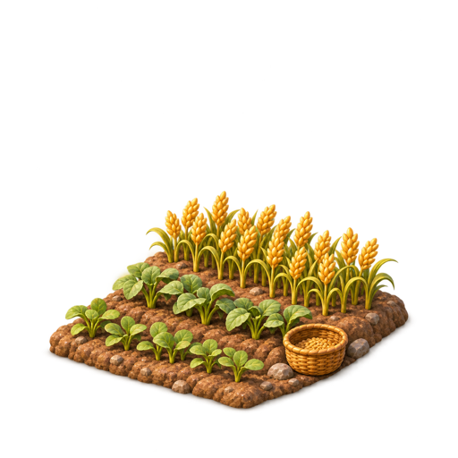
Farm
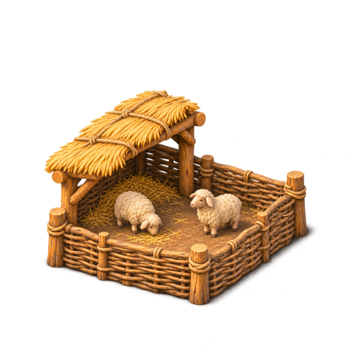
Animal pen
Storehouse
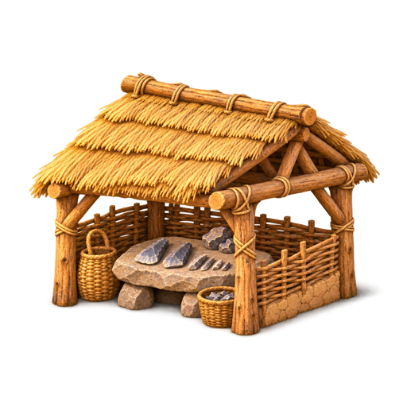
Toolmaker
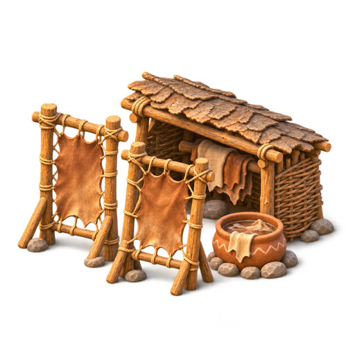
Tannery
 Pottery workshop
Storytelling circle
Healer’s hut
Pottery workshop
Storytelling circle
Healer’s hut
 Shrine
Shrine
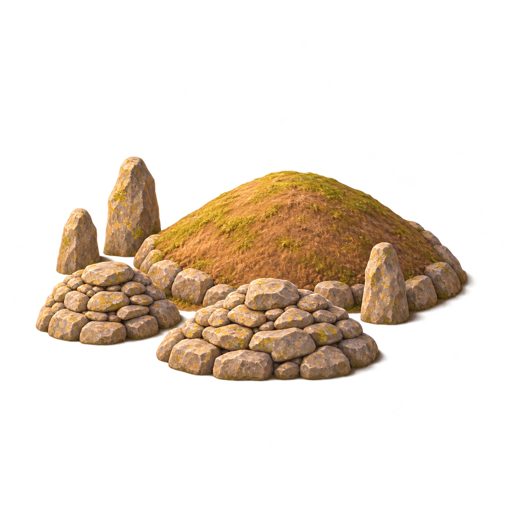
Burial ground
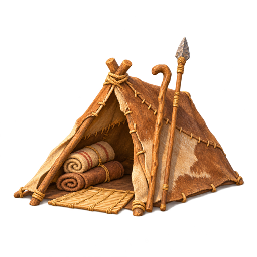
Scout camp
 Watchtower
Watchtower
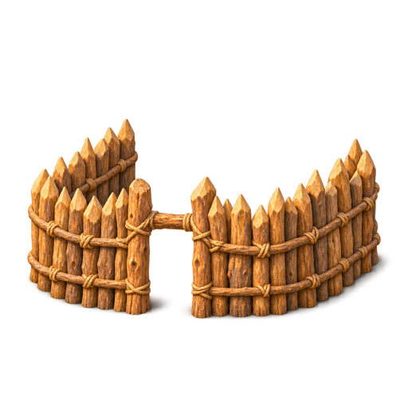
PalisadeReview in the installed app
Use the isolated Late developer settlement for dense-world art review. Browse all building/research categories, open resource popups and all seven chapter details. Normal-cost progression is verified separately from developer scenarios. Current normal save was preserved.
Starter-material protection
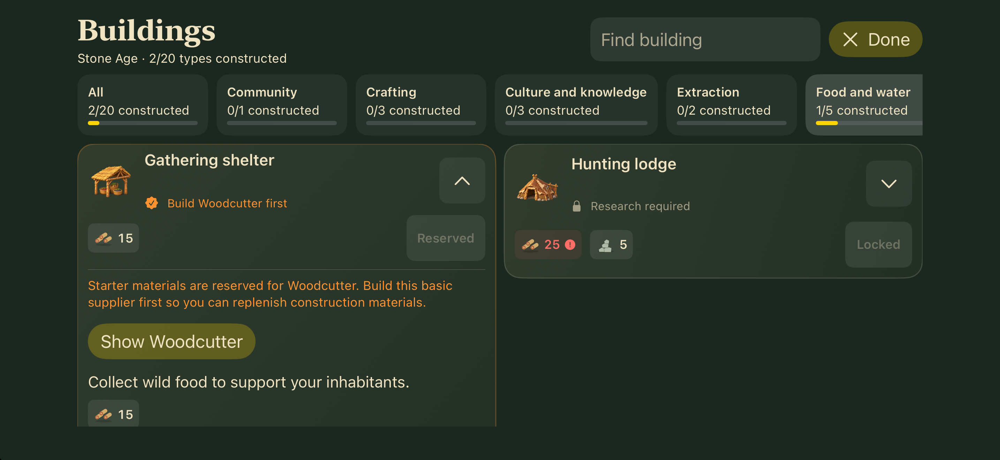
Actual shortages stay red; protected materials show an amber supplier instruction and a shortcut.Available evidence
126 Debug and115 Release tests, 9UI cases each on phone/mini/Pro, all20sprite/thumbnail alpha+size checks, normal-cost four-strategy progression and recovery checks. Phone/tablet interaction results and physical-device limits are recorded in the milestone report. Human enjoyment and permanent artistic acceptance remain Dima’s review.
Building geometry foundation
Verified foundation report: rectangular/oriented geometry internally; current sizes and artwork retained. 135 Debug / 124 Release and nine UI cases per profile pass.
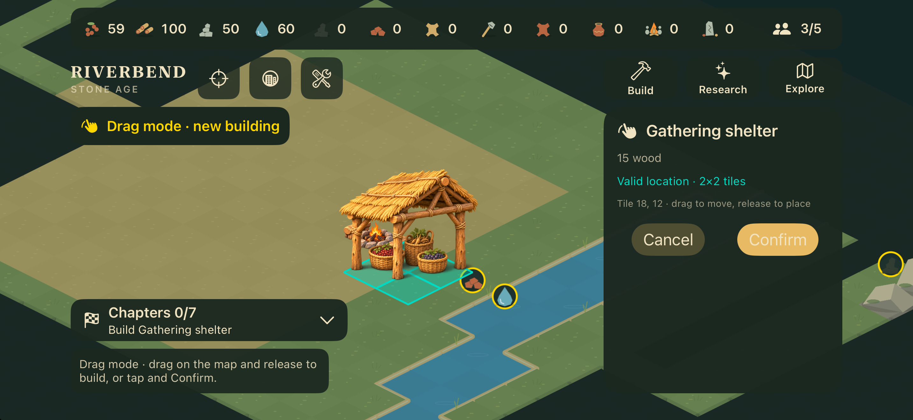
Current player placement remains unchanged; larger footprints and live rotation controls remain staged.